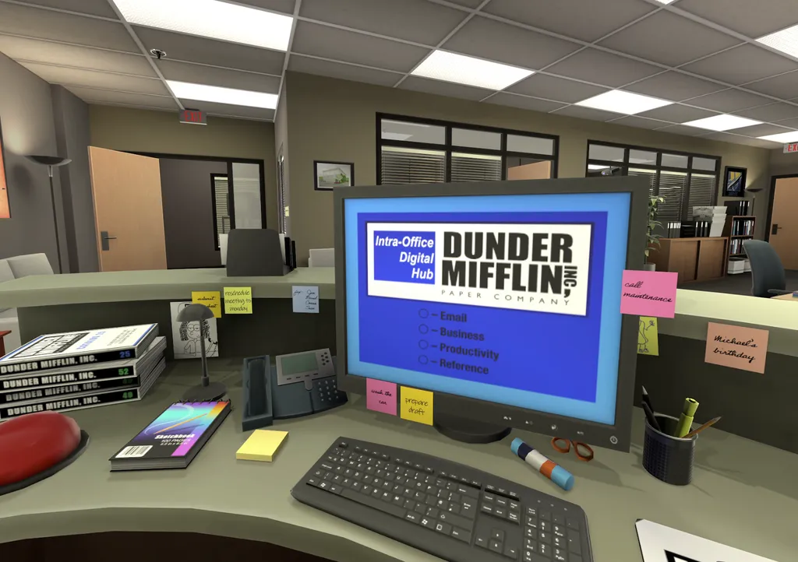
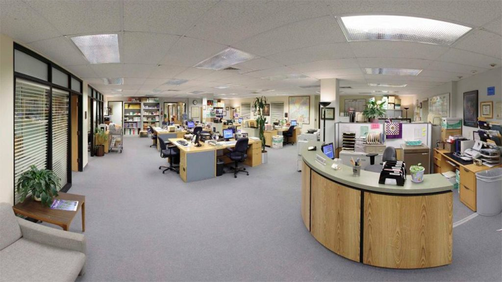
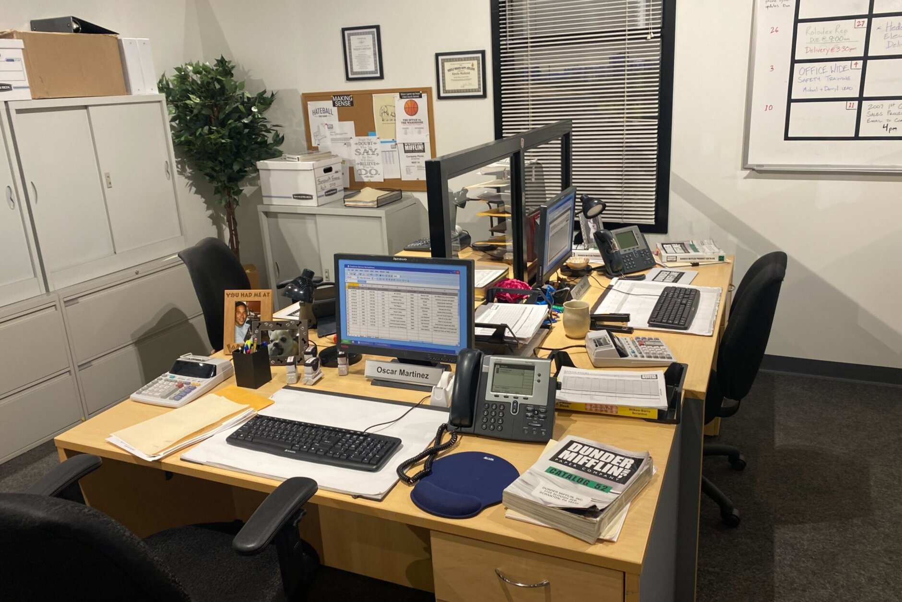
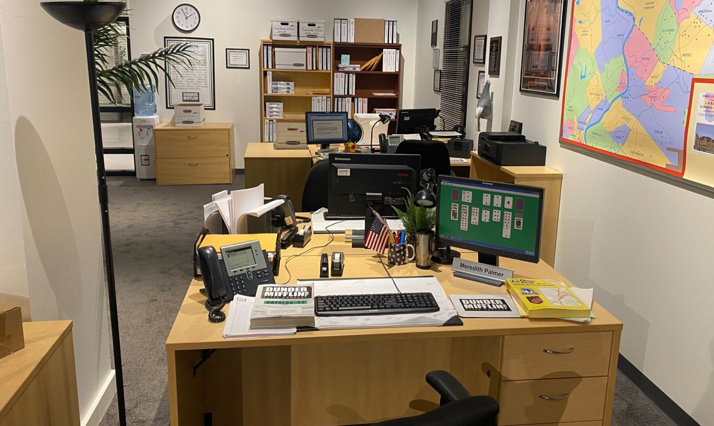
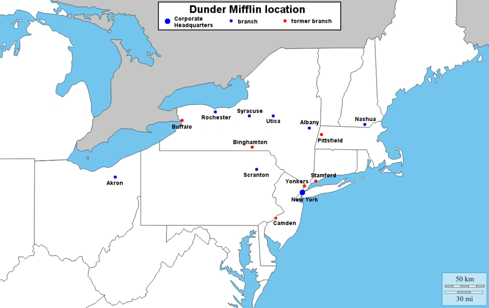

A Legacy of Paper Excellence
Founded in 1949 by Robert Dunder and Robert Mifflin, Dunder Mifflin Paper Company has been providing top-quality paper solutions for over half a century. From humble beginnings in a small Scranton office, the company quickly grew into a regional supplier with a passion for personalized service and customer satisfaction.

Changing the World, One Sheet at a Time
At Dunder Mifflin, we believe that great service and quality paper can still make a difference in a paperless world. Our mission is to provide reliable, customized paper solutions while maintaining strong community ties and customer trust.
   Built in Scranton, Growing Everywhere
With regional offices across Pennsylvania and beyond, we continue to deliver excellence — one ream at a time. Our Scranton branch, led by the legendary Michael Scott, remains the heart of our company.
